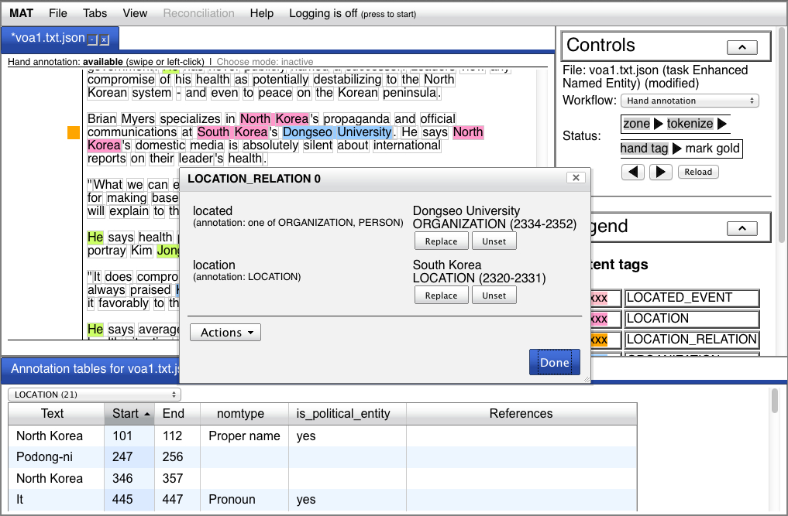
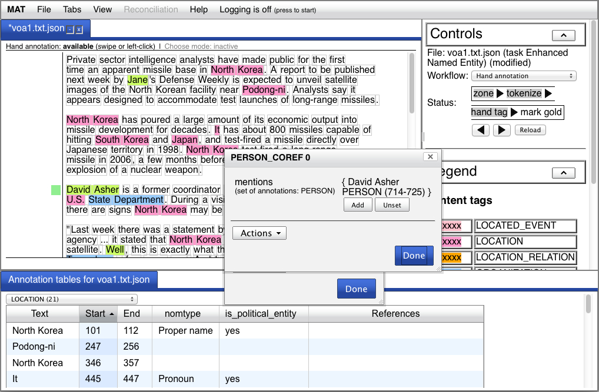

In Tutorial 1, we learned how to
do hand annotation for simple span annotations - tasks which
involve only labels and text spans. But MAT supports hand
annotation for much more complex annotation schemas, where
annotations have additional attributes; and some of those
attribute values can be other annotations. In this tutorial, we'll
learn about additional capabilities in the UI that you'll
encounter when you annotate documents according to these more
complex schemas. (For details about the impact on other MAT
capabilities, see here.)
So like tutorial 1, we're going to do this tutorial in file mode. We're going to assume that the sample task is installed (see step 1 in Tutorial 1 if it isn't).
See the section on starting the UI in Tutorial 1.
In Tutorial 1 (in fact, in all the tutorials so far), we've been
using a task called "Named Entity". This is a simple span task
which was original defined for a public evaluation connected to
the third Message Understanding Conference (MUC-3). The labels and
their (approximate) intended meanings are:
This is the sample task you installed in Tutorial 1.
You also installed a second task at the same time (we didn't tell
you that in Tutorial 1). This second task is called "Enhanced
Named Entity", and it's intended only to illustrate the
enhancements we're about to show you. This task contains six
labels, rather than three, and is modeled on a selection of tasks
you might encounter.
First, we have the same three labels as above, but with expanded
intended meanings:
Each of these labels has an attribute named "nomtype", which can
have one of three values: "Proper name" (e.g., "Hilary Clinton"),
"noun" (e.g., "the secretary"), or "pronoun" (e.g., "she"). We're
going to call this set of labels mentions, because they
mention the individual they refer to. This term is common in
language annotation. For illustration, we've also added a Boolean
(i.e., true/false) attribute to the LOCATION label,
"is_political_entity", which should be true for things like
"Poland" and false for things like "Asia".
Second, we have a label named "PERSON_COREF". The intention of
PERSON_COREF is to encode the fact that a set of annotations all
refer to the same individual. So if you have two PERSON
annotations, one on "Hilary Clinton" and one on "she", and they
refer to the same person, you'd represent this by creating a
PERSON_COREF annotation, and adding each of the PERSON annotations
to the value of its "mention" attribute, which must be a set of
annotations. The intended interpretation is that all the
annotations in the "mentions" attribute value refer to the same
individual.
Because the PERSON_COREF annotation doesn't correspond to a
specific chunk of text, it is spanless. (You'll learn how
to manipulate spanless annotations in a minute.)
Finally, we have two other annotations:
We don't intend these definitions to be precise; these two labels
represent two ways of representing events and relations which you
might encounter.
Let's see how to add these annotations.
Let's go ahead and load a document.
Your window will look like this:
You should notice three important differences from the document
view you found in Tutorial 1:
We'll learn how to use all these features in this tutorial.
You'll also notice, in the panel on the right, that this document
has passed through the "mark gold" step, and the annotation status
line shows that hand annotation is not available. Back up through
this step by pressing the left arrow immediately below the status
row. Now, hand annotation should be available.
The document we just loaded was annotated for the "Named Entity"
task. So the annotations it contains aren't all the annotations
we'd add, and those annotations don't yet have values for the
attributes those labels have in this task.
Click on the annotation for "North Korea" in the second line.
You'll notice that in the popup menu, in addition to the usual
actions, there are two new actions: "Edit annotation in popup" and
"Edit annotation in tab". Select "Edit annotation in popup", and
you'll get an annotation editor popup:
You can set values for the nomtype and is_political_entity
attributes here. Choose "Proper name" for nomtype, and "yes" for
is_political_entity, and then press "OK". Now, if you hover your
mouse over the annotation for "North Korea", you'll see a
description of the annotation with its attribute values in the
line immediately below the document text.
Next, let's create a new annotation. In the second paragraph,
create a PERSON annotation for "it" in the sentence "It has about
800 missiles...". An annotation editor will pop up immediately
(we've configured this task to do that). Select "Pronoun" for
nomtype, "yes" for is_political_entity, and then click "OK".
In the detail pane at the bottom, you have a tab named
"Annotation tables for voa1.txt.json". These tables can be
displayed for any document, via "View -> Show annotation
tables", but if the task contains spanless annotations (e.g.,
PERSON_COREF), this tab is enabled automatically. The drop-down
menu at the top of this pane allows you to access tables for each
annotation separately. The numbers in parentheses indicate how
many of the elements are present.
Select "LOCATION" in the drop-down menu. You'll see that that
first element listed, "North Korea", has the attribute values you
set a moment ago. Click on that row. You should see a popup menu,
which again gives you the opportunity (among other things) to edit
the annotation in a popup editor. Select this option. Now change
is_political_entity from "yes" to "no". You should see the value
of that attribute change in the annotation table as you modify it
in the editor popup. Change the value back to "yes", and click
"OK".
Most of the columns in the annotation tables are sortable. The
default order (for spanned annotation) is ascending by start
index. Select the "Text" column header, which shows the text span
for the annotation. You'll see the rows reorder themselves by
ascending order of the alphabet. Press the "Text" header again,
and the order will invert.
Select the "Start" header to return the table to its original
order.
In paragraph 3, select the text "said" and label it as a
LOCATED_EVENT. You'll immediately get a popup editor which looks
like this:
Now, press "Choose" next to "actor" to enter choose mode.
Choose mode allows you to create or select an annotation which can
be the value of this attribute. Your window will look like this:
You'll notice that the "Choose" button now reads "Choosing (press
to cancel)", and the status line above the document text now reads
"Choose mode: active", along with an option to cancel.
You can now either swipe text, to create a new annotation to
serve as the attribute value, or select an existing annotation, to
choose it as the value. If you're creating a new annotation, the
annotation will be created immediately (if there's only one kind
of annotation that can fill the attribute) or you'll get a popup
menu corresponding to your choices (if there are multiple kinds).
In this case, we have only the option of choosing or creating a
PERSON annotation.
Move the popup editor down and to the right, until you can see
all of the third paragraph. Swipe the word "he" immediately to the
left of the "said" that you swiped to create the LOCATED_EVENT
(make sure to swipe, rather than click - normally, you can click
on an unannotated word to swipe it, but not in choose mode). A
PERSON annotation will be created immediately, and you'll
automatically exit choose mode. You'll get a second popup editor
to edit the PERSON, where you can set the nomtype (which you
should set to "Pronoun"). You'll see also that the popup editor
also has a new "References" section which shows you where the
annotation is attached:
If you click "OK" and dismiss this popup editor, you'll see in
the popup editor for "said" that the "actor" attribute is now
filled with the annotation you just created.
Next, press "Choose" next to "location" to enter choose mode for
this attribute. Click on "Seoul" in this paragraph. It's already a
LOCATION annotation, which is an appropriate type for the
"location" attribute, so the attribute will be filled with this
annotation.
Next, notice the hover behavior. Now that these annotations are linked, when you hover over one, the other will be highlighted, along with the relationship it has to the element you're hovering over. So if you hover over "said" in the annotation text, "he" and "Seoul" will be highlighted, along with an indication that "he" is the "actor" and "Seoul" is the "location. Similarly, if you hover over "he" or "Seoul" in the annotation editor popup, they will be highlighted in the annotation text.
Finally, dismiss the popup editor for "said" by clicking "OK",
and in the annotation tables, select "LOCATED_EVENT" from the
drop-down menu. You'll see that the values you inserted are shown.
And if you select "PERSON", you'll see that there's now an entry
for "he" (which you just created), which shows its references, in
the same way that they're shown in the popup editor.
Up to this point, all the annotations we've worked with are
spanned annotations - that is, they correspond to a region of
text. MAT also supports spanless annotations, which aren't
anchored directly to the text in this way.
The region to the left of the annotation text is the spanless
sidebar. Icons for spanless annotations will appear in this
sidebar, aligned (as closely as possible) with the midpoint of the
annotations they point to. We can create spanless annotations by
clicking in this sidebar.
Click in the spanless sidebar. You should get an annotation popup
menu which gives you the opportunity to create either a
LOCATION_RELATION or a PERSON_COREF annotation. Choose
LOCATION_RELATION. You'll get an annotation editor popup, and an
icon will appear in the spanless sidebar, at the very top of the
document (because it has no annotations it points to yet). We're
going to use this relation to mark the location relation expressed
by "South Korea's Dongseo University" in the paragraph about
two-thirds of the way through the document, in the paragraph that
begins "Brian Myers specializes in...". Scroll down to this
paragraph.
First, press "Choose" next to "location" and select "South Korea"
as the attribute value. The relation icon will now be aligned with
"South Korea", rather than at the top of the window as it was when
it was created. Complete the relation by selecting "Dongseo
University" to fill the "located" attribute. Your window should
look like this:

Click "Done" to dismiss the editor popup.
As our final hand annotation activity, we're going to use the
PERSON_COREF annotation to represent coreference between mentions.
Return to the third paragraph, which begins "David Asher is...".
Pop up an editor for the PERSON annotation on "David Asher". In
the "Actions" menu, select "Add to mentions in PERSON_COREF...".
This action will shift us into choose mode; in this case, rather
than selecting an annotation that fills an attribute value, we're
going to select or create the annotation which this annotation
fills. (We could also have initiated this process from the
spanless sidebar, but in some cases, this is a more natural way to
do it.)
Click in an empty region of the spanless sidebar. This has the
same effect, in choose mode, as swiping the annotation text,
except it works for spanless annotations instead of spanned
annotations. Because there's only one possible annotation type
that can be created (namely, PERSON_COREF), this annotation will
be created immediately, and the annotation for "David Asher" will
be inserted into the "mentions" attribute. At this point, your
window will look like this:

You'll see a spanless icon to the left of "David Asher", and two
popup editors: one for "David Asher", and a new one for the
PERSON_COREF annotation, showing the mention as an element of the
"mentions" attribute. Note the curly brackets, indicating a set
(so far, with one member).
Click "Done" in each popup editor to dismiss them.
Now, bring up a popup editor for "he" in the next line. Under
"Actions", select "Add to mentions in PERSON_COREF...", and click
on the PERSON_COREF icon in the spanless sidebar next to "David
Asher". Your popup editor should now show that "he" is referenced
in two places: as the "actor" of the "said" event, and in the
"mentions" of the PERSON_COREF. Click "OK" to dismiss your editor
popup.
Next, hover over the PERSON_COREF icon in the spanless sidebar.
Note that the mentions are shown as part of the annotation
description in the status line immediately below the document
text. Click on the PERSON_COREF icon, and pop up its editor. Hover
your mouse over the descriptions of the annotations in the
"mentions" slot. You'll notice that they change color, and that
those annotations are highlighted with a box in the document text.
Click on the description of "he". You'll get a popup menu which
allows you to, among other things, detach the annotation from this
location. Choose that option, and dismiss the popup editor. If you
hover over the spanless icon again, you'll see that it now only
has one mention.
For more details on editing annotations, see here. For more details about
spanless annotations, see here.
Now, you can save your file if you want. This is identical to
step 6 in Tutorial 1.
Shut down your Web server by typing "exit" in the window where
you started the Web server. More details here.
If you're not planning on doing any other tutorials, and you
don't want the "Enhanced Named Entity" task hanging around, remove
it as follows:
Unix:This concludes Tutorial 8.
% cd $MAT_PKG_HOME
% bin/MATManagePluginDirs remove $PWD/sample/ne
Windows native:
> cd %MAT_PKG_HOME%%
> bin\MATManagePluginDirs.cmd remove %CD%\sample\ne